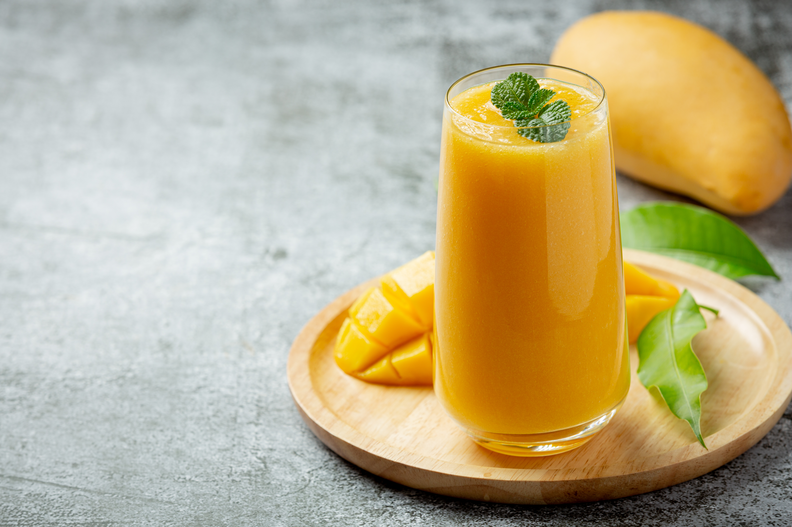

Mango Lassi is a classic Indian yogurt-based drink made with ripe mangoes, yogurt, and a hint of cardamom. It's enriched with a splash of milk or fresh cream to give it a rich, creamy texture and to tone down the natural tang of the yogurt. For a twist, some versions also include rose water or a few strands of saffron for added aroma and depth.